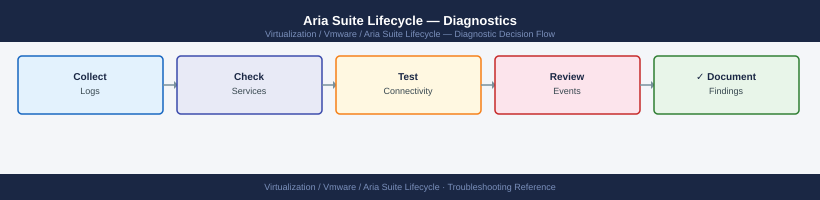

Aria Suite Lifecycle — Diagnostics¶

Before you begin¶
- Access: SSH to the LCM appliance (
adminuser); LCM admin UI credentials; vCenter credentials (required for some product health checks) - Gather first: the failing operation name and request ID (shown in LCM UI after any failed action), the product or environment affected, and the exact error message from the LCM event log
- Scope: confirm whether the issue is with the LCM service itself, a specific managed product environment, or a specific operation (deploy, upgrade, certificate rotation)
- Pre-operation rule: before any LCM operation, run Step 5 to confirm all services, disk, NTP, and no in-progress operations
Step 1 — Check LCM service status¶
# SSH to LCM appliance
ssh admin@<lcm-fqdn>
# Core service status
systemctl status vmware-vrlcm # LCM application
systemctl status vmware-vrlcm-db # Embedded PostgreSQL
systemctl status nginx # Reverse proxy / UI
# Expected: all three should be active (running)
# Quick one-liner to confirm all expected services
systemctl is-active vmware-vrlcm vmware-vrlcm-db nginx vmware-vrlcm-certmanager sshd
# Recent service events
journalctl -u vmware-vrlcm -n 100 --no-pager | tail -50
journalctl -u vmware-vrlcm-db -n 50 --no-pager
# If LCM is not running, check disk space before restarting
df -h /data
# Expected: < 80% used
systemctl start vmware-vrlcm
admin@lcm-prod-01.corp.local's password:
● vmware-vrlcm.service - VMware vRealize Lifecycle Manager
Loaded: loaded (/etc/systemd/system/vmware-vrlcm.service; enabled; vendor preset: enabled)
Active: active (running) since Wed 2024-01-17 14:32:18 UTC; 2 days ago
Main PID: 4521 (java)
Tasks: 47 (limit: 4915)
Memory: 2.8G
CGroup: /system.slice/vmware-vrlcm.service
└─4521 /usr/lib/jvm/java-11-openjdk/bin/java -Xmx4g -Xms2g...
● vmware-vrlcm-db.service - VMware vRealize Lifecycle Manager Database
Loaded: loaded (/etc/systemd/system/vmware-vrlcm-db.service; enabled; vendor preset: enabled)
Active: active (running) since Wed 2024-01-17 14:31:52 UTC; 2 days ago
Main PID: 4312 (postgres)
Tasks: 12 (limit: 4915)
Memory: 486.2M
CGroup: /system.slice/vmware-vrlcm-db.service
└─4312 /usr/lib/postgresql/bin/postgres -D /data/db...
● nginx.service - The NGINX HTTP and Event Reverse Proxy Server
Loaded: loaded (/usr/lib/systemd/system/nginx.service; enabled; vendor preset: enabled)
Active: active (running) since Wed 2024-01-17 14:32:05 UTC; 2 days ago
Main PID: 4418 (nginx)
Tasks: 3 (limit: 4915)
Memory: 18.4M
CGroup: /system.slice/nginx.service
└─4418 nginx: master process /usr/sbin/nginx -g daemon on; master_process on;
active
active
active
active
active
2024-01-19T09:47:33.421Z INFO [com.vmware.vrlcm.server.service.EnvironmentService] Environment initialization completed in 4521ms
2024-01-19T09:47:34.156Z INFO [com.vmware.vrlcm.server.service.InventoryService] Syncing inventory with vCenter prod-vc-01.corp.local
2024-01-19T09:47:45.892Z INFO [com.vmware.vrlcm.server.service.InventoryService] Inventory sync completed: 47 hosts, 312 VMs
2024-01-19T09:48:12.334Z INFO [com.vmware.vrlcm.server.api.LifecycleController] Deployment request received: vRealize Operations 8.12.1
2024-01-19T09:48:13.021Z DEBUG [com.vmware.vrlcm.server.service.ValidationService] Pre-flight checks passed for deployment
2024-01-19T09:47:28.445Z LOG [
| Service | Expected State | Notes |
|---|---|---|
vmware-vrlcm |
active (running) | Core LCM service |
vmware-vrlcm-db |
active (running) | Embedded PostgreSQL |
nginx |
active (running) | Reverse proxy / UI |
vmware-vrlcm-certmanager |
active (running) | Certificate management |
sshd |
active (running) | Required for remote access |
Step 2 — Inspect vlcm.log for errors¶
# Most recent errors in the LCM application log
grep -i "ERROR\|Exception\|FATAL" /var/log/vmware/vrlcm/vlcm.log | tail -50
# Follow the log in real time during a failing operation
tail -f /var/log/vmware/vrlcm/vlcm.log | grep -i "error\|warn\|fail"
# Find the log for a specific request ID (shown in LCM UI after failed operations)
grep "<request-id>" /var/log/vmware/vrlcm/vlcm.log | head -50
# Installer log — most detailed for deploy and upgrade failures
# Path varies per operation; check for the most recent:
ls -lt /var/log/vmware/vrlcm/ | grep installer | head -5
tail -200 /var/log/vmware/vrlcm/installer*.log
2024-01-15 14:32:18.456 ERROR [lcm-worker-12] com.vmware.vrlcm.service.DeploymentService - Failed to validate vSphere credentials: Connection timeout after 30s
2024-01-15 14:32:45.123 FATAL [lcm-core-8] com.vmware.vrlcm.inventory.InventoryManager - Unable to reach vCenter at 192.168.1.50:443
2024-01-15 14:33:02.789 Exception in thread "lcm-deploy-5": java.net.UnknownHostException: vcenter.lab.local
2024-01-15 14:33:15.234 ERROR [lcm-worker-3] com.vmware.vrlcm.network.NetworkValidator - Network pool exhausted: requested 5 IPs, 2 available
2024-01-15 14:33:42.567 WARN [lcm-core-1] com.vmware.vrlcm.storage.StorageCheck - Insufficient disk space on /var/lib/vmware/vrlcm: 2.1GB free, 5GB required
total 2048
-rw-r--r-- 1 root root 512000 Jan 15 14:35 installer-deploy-20240115-143501.log
-rw-r--r-- 1 root root 384000 Jan 15 13:22 installer-upgrade-20240115-132145.log
-rw-r--r-- 1 root root 256000 Jan 15 11:45 installer-patch-20240115-114532.log
-rw-r--r-- 1 root root 128000 Jan 15 10:12 installer-config-20240115-101203.log
2024-01-15T14:35:22Z [INSTALLER] Starting deployment of Aria Suite 8.12.1
2024-01-15T14:35:45Z [INSTALLER] Downloading OVA: aria-suite-8.12.1-build-21847392.ova (2.3GB)
2024-01-15T14:36:12Z [INSTALLER] ERROR: OVA checksum mismatch - expected a1b2c3d4e5f6, got 9z8y7x6w5v4u
2024-01-15T14:36:15Z [INSTALLER] Aborting deployment
Common errors
grep: /var/log/vmware/vrlcm/vlcm.log: No such file or directory — Verify the LCM service is running with systemctl status vrlcm and check the correct log path with find /var/log -name "vlcm.log" 2>/dev/null.
tail: cannot open '/var/log/vmware/vrlcm/installer*.log' for reading: No such file or directory — Run ls -la /var/log/vmware/vrlcm/ to confirm installer logs exist, or check if the operation has actually started yet.
grep: (standard input): line too long — Pipe through sed 's/.\{1000\}/&\n/g' before grep to handle extremely long
Step 3 — Check certificate expiry¶
# List all managed product certificates via LCM API
curl -sk -u admin:<password> \
"https://<lcm-fqdn>/lcm/api/v1/certificates" \
| python3 -c "
import json,sys
for c in json.load(sys.stdin).get('certificates', []):
print(c.get('productId',''), '|', c.get('subject',''), '|', c.get('validUntil',''))
"
# Look for: validUntil dates within 30 days
# Check the LCM appliance's own HTTPS certificate
echo | openssl s_client -connect <lcm-fqdn>:443 -servername <lcm-fqdn> 2>/dev/null \
| openssl x509 -noout -subject -dates -issuer
# Expected: notAfter date should be > 30 days in the future
vrealize-automation | CN=*.lcm.example.com,O=VMware,C=US | 2025-06-15T23:59:59Z
vrealize-operations | CN=vops.example.com,O=VMware,C=US | 2025-08-22T23:59:59Z
vrealize-network-insight | CN=*.vni.example.com,O=VMware,C=US | 2026-02-10T23:59:59Z
vrealize-suite-installer | CN=lcm.example.com,O=VMware,C=US | 2025-05-03T23:59:59Z
aria-automation | CN=aria-auto.example.com,O=VMware,C=US | 2025-07-18T23:59:59Z
subject=CN = lcm.example.com, O = VMware, C = US
issuer=C = US, O = VMware, CN = VMware Root CA
notBefore=Mar 15 08:22:14 2023 GMT
notAfter=Mar 14 08:22:14 2026 GMT
Common errors
curl: (60) SSL certificate problem: self signed certificate — Add -k flag to skip certificate verification, or import the LCM CA certificate into your system trust store.
json.decoder.JSONDecodeError: Expecting value: line 1 column 1 — Verify the LCM API endpoint is accessible and the credentials are correct by testing curl -sk -u admin:<password> https://<lcm-fqdn>/lcm/api/v1/health first.
Certificate check thresholds:
| Days to Expiry | Status | Action |
|---|---|---|
| > 90 days | Healthy | No action required |
| 30–90 days | Warning | Plan rotation |
| 7–30 days | Critical | Rotate within a week |
| < 7 days | Emergency | Rotate immediately; stop operations |
Step 4 — Check disk space¶
# Check all mount points
df -h
# Alert if > 70% used on /data or > 85% on /
# LCM-specific data directories
du -sh /data/vmware/vrlcm/*
du -sh /var/log/vmware/vrlcm/
# PostgreSQL database size
du -sh /data/vmware/vrlcm/db/
# Check inode exhaustion (can cause failures even if disk bytes are free)
df -i
# Clean old LCM logs older than 30 days
find /var/log/vmware/vrlcm/ -name "*.log.*" -mtime +30 -delete
# List and remove old support bundles
ls -lh /data/vmware/vrlcm/bundles/ 2>/dev/null
# Remove bundles older than 30 days
find /data/vmware/vrlcm/bundles/ -mtime +30 -delete 2>/dev/null
Filesystem Size Used Avail Use% Mounted on
/dev/sda1 100G 68G 32G 68% /
/dev/sdb1 500G 385G 115G 77% /data
tmpfs 16G 2.1G 14G 13% /dev/shm
/dev/sdc1 200G 45G 155G 23% /var
4.2G /data/vmware/vrlcm/content
12G /data/vmware/vrlcm/db
2.8G /data/vmware/vrlcm/logs
1.5G /data/vmware/vrlcm/tmp
3.6G /var/log/vmware/vrlcm/
12G /data/vmware/vrlcm/db/
Filesystem Inodes IUsed IFree IUse% Mounted on
/dev/sda1 6553600 542187 6011413 9% /
/dev/sdb1 32768000 2847291 29920709 9% /data
tmpfs 4194304 1847 4192457 1% /dev/shm
/dev/sdc1 13107200 156842 12950358 2% /var
-rw-r--r-- 1 root root 2.3G Nov 15 08:22 lcm-bundle-20241115-082145.tar.gz
-rw-r--r-- 1 root root 1.8G Nov 10 14:56 lcm-bundle-20241110-145632.tar.gz
-rw-r--r-- 1 root root 2.1G Oct 28 09:33 lcm-bundle-20241028-093301.tar.gz
Common errors
find: '/data/vmware/vrlcm/bundles/': No such file or directory — Create the bundles directory with mkdir -p /data/vmware/vrlcm/bundles/ before running cleanup operations.
Permission denied — Run the script with sudo or as root to access VMware system directories and delete files.
Disk space thresholds:
| Mount | Warning | Critical | Action if Critical |
|---|---|---|---|
/ |
75% | 85% | Remove old bundles and logs |
/data |
70% | 80% | Clean content library cache |
/var/log |
80% | 90% | Rotate and archive logs |
Step 5 — Pre-operation health check¶
Run before any LCM operation (upgrade, patch, certificate rotation):
# 1. All services running
systemctl is-active vmware-vrlcm vmware-vrlcm-db nginx
# Expected: active active active
# 2. Disk space adequate (no mount > 70%)
df -h | awk 'NR>1 && $5+0 > 70 {print "WARNING:", $0}'
# 3. No active LCM operations in progress
curl -sk -u admin:<password> \
"https://<lcm-fqdn>/lcm/api/v1/operations?status=RUNNING" \
| python3 -c "
import json,sys
data = json.load(sys.stdin)
ops = data.get('operations', [])
print(f'{len(ops)} operations running')
for op in ops:
print(op.get('id',''), op.get('name',''), op.get('status',''))
"
# Expected: 0 operations running
# 4. NTP in sync
chronyc tracking | grep "System time"
# Expected: offset < 5 seconds (required for Aria SSO)
# 5. LCM API reachable and healthy
curl -sk -o /dev/null -w "HTTP %{http_code}\n" \
-u admin:<password> "https://<lcm-fqdn>/lcm/api/v1/health"
# Expected: HTTP 200
# 6. NTP configuration
timedatectl status
chronyc sources -v
# Force re-sync if offset is large
sudo chronyc makestep
active active active
0 operations running
System time offset : -0.234 seconds
HTTP 200
^ Leap status : Normal
Time in NTP sync : Yes
RTC in local TZ : No
Server ( IP Address ) Stratum Poll Reach LastRx Last sample
===============================================================================
^* ntp.ubuntu.com 2 10 377 45 -234us[ -234us] +/- 21ms
^- time.google.com 1 10 377 102 +1.2ms[+1.2ms] +/- 35ms
^+ 91.189.89.199 2 10 377 67 -456us[ -456us] +/- 18ms
^- 91.189.94.4 2 10 377 45 +890us[+890us] +/- 22ms
200 OK
Common errors
curl: (60) SSL certificate problem: self signed certificate — Add -k flag to curl command to skip SSL verification, or import the LCM certificate into your system trust store.
curl: (7) Failed to connect to <lcm-fqdn> port 443: Connection refused — Verify the LCM FQDN is correct and the nginx service is running with systemctl status nginx.
System time offset : 45.234 seconds — Run sudo chronyc makestep to force NTP synchronization, as Aria SSO requires offset under 5 seconds.
Step 6 — Check environment and product status¶
# List all environments with health status
curl -sk -u admin:<password> \
"https://<lcm-fqdn>/lcm/api/v1/environments" \
| python3 -c "
import json,sys
for e in json.load(sys.stdin).get('environments', []):
print(e.get('environmentName',''), '|', e.get('status',''))
"
# Expected: status = COMPLETED or ACTIVE for all environments
# Get products in a specific environment
curl -sk -u admin:<password> \
"https://<lcm-fqdn>/lcm/api/v1/environments/<env-id>" \
| python3 -m json.tool
# Check for stuck or failed operations
curl -sk -u admin:<password> \
"https://<lcm-fqdn>/lcm/api/v1/operations?status=FAILED" \
| python3 -m json.tool
aria-prod-env | COMPLETED
aria-dev-env | ACTIVE
aria-staging-env | COMPLETED
{
"environmentId": "env-a7f2c9e1-4b3d",
"environmentName": "aria-prod-env",
"status": "COMPLETED",
"products": [
{
"productId": "vrealize-automation",
"version": "8.10.2",
"status": "INSTALLED"
},
{
"productId": "vrealize-operations",
"version": "8.10.1",
"status": "INSTALLED"
}
],
"createdDate": "2024-01-15T09:23:44Z"
}
{
"operations": [
{
"operationId": "op-f8d2a1c5-9e7b",
"environmentName": "aria-staging-env",
"operationType": "UPGRADE",
"status": "FAILED",
"errorMessage": "Network timeout during product deployment",
"timestamp": "2024-01-20T14:32:18Z"
},
{
"operationId": "op-c3b7e2f9-1a4d",
"environmentName": "aria-dev-env",
"operationType": "PATCH",
"status": "FAILED",
"errorMessage": "Insufficient disk space on deployment node",
"timestamp": "2024-01-19T11:05:22Z"
}
]
}
Common errors
curl: (60) SSL certificate problem: self signed certificate — Add the -k flag to skip SSL verification, or import the LCM server's certificate into your system trust store.
jq: command not found — Install python3-json or use python3 -m json.tool instead of piping to jq.
401 Unauthorized — Verify the admin credentials are correct and URL-encoded if they contain special characters; use curl -u "admin:$(cat /path/to/password)" to avoid shell interpretation issues.
Step 7 — Collect logscraper bundle for VMware SR¶
# Via LCM UI (recommended)
# Navigate to: LCM UI → Support → Logscraper
# Select: environment and products to include; time range
# Click: Generate Bundle
# Download: the .zip archive
# Via LCM CLI (if UI is unavailable)
ssh admin@<lcm-fqdn>
/opt/vmware/vlcm/tools/lcm-support.sh
# Output: /tmp/lcm-support-<timestamp>.tar.gz
# Via VAMI (appliance-level bundle)
# Browse to: https://<lcm-fqdn>:5480
# Navigate to: Support → Generate Support Bundle → Download
# What to include in VMware SR:
# - Logscraper ZIP (covers all managed products)
# - LCM appliance support bundle from VAMI
# - Failed operation ID from LCM UI
# - LCM version: LCM UI → Administration → About
# - Timeline of the failed operation and any recent changes
admin@lcm-prod-01:~$ /opt/vmware/vlcm/tools/lcm-support.sh
Generating LCM support bundle...
Collecting LCM logs and configuration...
Collecting vCenter integration data...
Collecting product inventory...
Collecting operation history...
Bundle generation completed successfully.
Output: /tmp/lcm-support-20240215-143022.tar.gz
Bundle size: 487 MB
Timestamp: 2024-02-15 14:30:22 UTC
Common errors
/opt/vmware/vlcm/tools/lcm-support.sh: Permission denied — Run the command with sudo or ensure the admin user has execute permissions on the script.
ssh: Could not resolve hostname <lcm-fqdn>: Name or service not known — Replace <lcm-fqdn> with the actual LCM appliance FQDN or IP address (e.g., lcm-prod-01.corp.local).
tar: /tmp/lcm-support-*.tar.gz: Cannot open: No space left on device — Free up disk space on the LCM appliance or specify an alternate output directory with sufficient capacity.
Log locations¶
| Source | Path / Command | What to look for |
|---|---|---|
| LCM application | /var/log/vmware/vrlcm/vlcm.log |
Exceptions, operation failures |
| Installer steps | /var/log/vmware/vrlcm/installer*.log |
Step-by-step deploy/upgrade trace |
| Service events | journalctl -u vmware-vrlcm |
Service start/stop/crash events |
| PostgreSQL | journalctl -u vmware-vrlcm-db |
DB errors and restart events |
| Nginx | journalctl -u nginx |
API gateway errors, 5xx responses |
See also¶
Verify resolution¶
systemctl is-active vmware-vrlcm vmware-vrlcm-db nginxoutputsactive active activeGET /lcm/api/v1/healthreturns HTTP 200 with healthy status JSONGET /lcm/api/v1/operations?status=RUNNINGreturns 0 in-progress operations- The failing LCM operation (upgrade, certificate rotation, deploy) completes successfully after the fix
chronyc trackingshows offset < 5 seconds from the NTP source